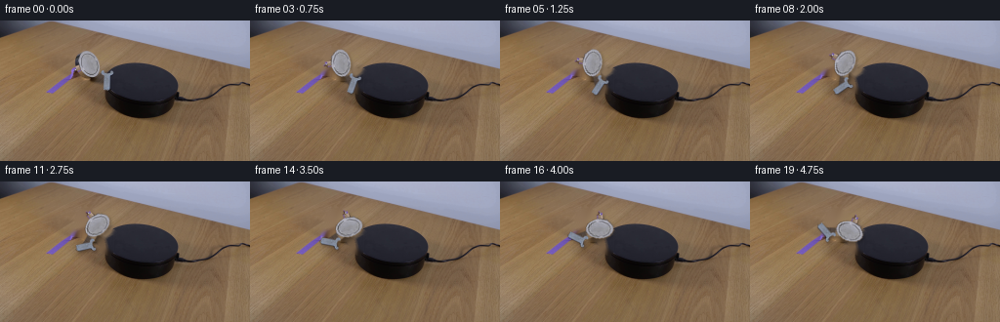
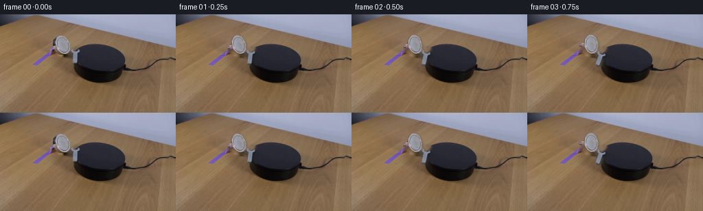

CODING AGENTS AS PIXEL WORLD MODELS
traex/GPT-5.6-Sol · 0102
点击播放 · 原生 RGB 像素
逐轮保存的候选
回放视频、检查图与代码变化。
每份候选均可单独播放。实际图片检查记录在下方工具轨迹中。
候选 01播放与检查图
点击播放 · 原生 RGB 像素


展开代码变化
--- 上一保存版本
+++ 本次保存版本
@@ -0,0 +1,108 @@
+"""Generate the requested locked-off magnetic wrench demonstration.
+
+The original photograph supplies every static pixel. The only synthesized motion is
+an image-space rigid rotation of the photographed wrench, with its contact shadow.
+"""
+from pathlib import Path
+import cv2
+import numpy as np
+from PIL import Image
+import artifact_io
+
+
+def extract_wrench(rgb):
+ """Return a soft alpha matte for the bright wrench at the left of the platform."""
+ bgr = rgb[..., ::-1].copy()
+ h, w = rgb.shape[:2]
+ gc = np.full((h, w), cv2.GC_BGD, np.uint8)
+
+ # A close outline around the wrench. It deliberately excludes the platform
+ # and the magnet, both of which remain perfectly locked throughout the shot.
+ outline = np.array([
+ [86, 29], [93, 30], [99, 33], [103, 39], [103, 46],
+ [101, 49], [108, 49], [115, 52], [117, 56], [115, 61],
+ [114, 69], [111, 73], [106, 72], [104, 65], [104, 60],
+ [99, 58], [92, 60], [84, 58], [77, 54], [73, 49],
+ [75, 43], [79, 38], [81, 32]
+ ], np.int32)
+ cv2.fillPoly(gc, [outline], cv2.GC_PR_FGD)
+
+ vals = rgb.astype(np.int16)
+ mean = vals.mean(axis=2)
+ spread = vals.max(axis=2) - vals.min(axis=2)
+ within = gc == cv2.GC_PR_FGD
+ # Neutral, brightly illuminated steel gives GrabCut reliable foreground seeds.
+ gc[within & (mean > 112) & (spread < 31)] = cv2.GC_FGD
+
+ bg_model = np.zeros((1, 65), np.float64)
+ fg_model = np.zeros((1, 65), np.float64)
+ cv2.grabCut(bgr, gc, None, bg_model, fg_model, 7, cv2.GC_INIT_WITH_MASK)
+ hard = np.isin(gc, (cv2.GC_FGD, cv2.GC_PR_FGD)).astype(np.uint8)
+
+ # Keep the two substantial pieces (head/body and handle). Dark steel at their
+ # junction is restored geometrically; tiny isolated classifications are dropped.
+ n, labels, stats, _ = cv2.connectedComponentsWithStats(hard, 8)
+ hard[:] = 0
+ for j in range(1, n):
+ if stats[j, cv2.CC_STAT_AREA] >= 80:
+ hard[labels == j] = 1
+ bridge = np.zeros_like(hard)
+ cv2.line(bridge, (97, 49), (109, 60), 1, 7, cv2.LINE_AA)
+ bridge &= (gc != cv2.GC_BGD).astype(np.uint8)
+ hard |= bridge
+ hard = cv2.morphologyEx(hard, cv2.MORPH_CLOSE,
+ cv2.getStructuringElement(cv2.MORPH_ELLIPSE, (3, 3)))
+
+ # A fractional one-pixel boundary retains the photographic antialiasing.
+ alpha = cv2.GaussianBlur(hard.astype(np.float32), (0, 0), 0.58)
+ alpha = np.clip(alpha, 0.0, 1.0)
+ return alpha
+
+
+def render():
+ root = Path(__file__).resolve().parent
+ original = np.asarray(Image.open(root / "first_frame.png").convert("RGB"), dtype=np.uint8)
+ h, w = original.shape[:2]
+ alpha = extract_wrench(original)
+
+ # Remove the initial wrench once to make a clean, locked background plate.
+ removal = (cv2.dilate((alpha > .025).astype(np.uint8),
+ cv2.getStructuringElement(cv2.MORPH_ELLIPSE, (7, 7))) * 255)
+ clean_bgr = cv2.inpaint(original[..., ::-1], removal, 4.0, cv2.INPAINT_TELEA)
+ clean = clean_bgr[..., ::-1].astype(np.float32)
+
+ source = original.astype(np.float32)
+ center = (95.0, 49.5)
+ frames = [original.copy()] # contractual pixel-identical frame zero
+
+ # At 4 fps, 7.6 degrees per exposure reads as a smooth, real-time rotation.
+ # A tiny smooth acceleration at the beginning conveys the magnet overcoming
+ # static friction without adding any camera or environmental motion.
+ for i in range(1, 20):
+ t = i / 19.0
+ eased = t - 0.055 * (1.0 - np.exp(-6.0 * t))
+ degrees = -145.0 * eased # OpenCV negative angles are visually clockwise.
+ M = cv2.getRotationMatrix2D(center, degrees, 1.0)
+
+ a = cv2.warpAffine(alpha, M, (w, h), flags=cv2.INTER_LANCZOS4,
+ borderMode=cv2.BORDER_CONSTANT, borderValue=0)
+ a = np.clip(a, 0.0, 1.0)
+ obj = cv2.warpAffine(source, M, (w, h), flags=cv2.INTER_LANCZOS4,
+ borderMode=cv2.BORDER_REFLECT_101)
+
+ # Soft contact shadow stays just down-table from the rotating wrench.
+ sh_M = M.copy()
+ sh_M[0, 2] += 1.4
+ sh_M[1, 2] += 1.8
+ shadow = cv2.warpAffine(alpha, sh_M, (w, h), flags=cv2.INTER_LINEAR,
+ borderMode=cv2.BORDER_CONSTANT, borderValue=0)
+ shadow = cv2.GaussianBlur(shadow, (0, 0), 1.25)
+ frame = clean * (1.0 - (0.23 * shadow)[..., None])
+ frame = obj * a[..., None] + frame * (1.0 - a[..., None])
+ frames.append(np.clip(np.rint(frame), 0, 255).astype(np.uint8))
+
+ return np.stack(frames, axis=0)
+
+
+if __name__ == "__main__":
+ artifact_io.save(render(), Path(__file__).resolve().parent)
可观测工具轨迹
实际执行的命令与返回图片。
命令 1exit 0
/bin/bash -lc "cat GENERATION_RULES.md && printf '\\n---PROMPT---\\n' && cat prompt.txt"
命令 2exit 0
/bin/bash -lc "find . -maxdepth 2 -type f -printf '%p %s bytes\\n' | sort"
命令 3exit 0
/bin/bash -lc "python3 - <<'PY'
from PIL import Image
im=Image.open('first_frame.png')
print(im.mode, im.size)
print(im.getextrema())
PY"命令 4exit 0
/bin/bash -lc "python3 - <<'PY'
import cv2, numpy as np
from PIL import Image
im=cv2.imread('first_frame.png'); rgb=im[...,::-1]; h,w=im.shape[:2]
print('mean RGB',rgb.mean((0,1)), 'std',rgb.std((0,1)))
# regional means 8x6
for y in range(0,h,24):
print('row',y, [tuple(np.round(rgb[y:y+24,x:x+32].mean((0,1))).astype(int)) for x in range(0,w,32)])
# kmeans
p=rgb.reshape(-1,3).astype(np.float32)
crit=(cv2.TERM_CRITERIA_EPS+cv2.TERM_CRITERIA_MAX_ITER,50,.2)
_,lab,cen=cv2.kmeans(p,10,None,crit,10,cv2.KMEANS_PP_CENTERS)
lab=lab.reshape(h,w); cen=np.uint8(cen)
for i,c in sorted(enumerate(cen),key=lambda z:z[1].mean()):
ys,xs=np.where(lab==i)
print(i,tuple(map(int,c)),len(xs),'bbox', (xs.min(),ys.min(),xs.max(),ys.max()),'centroid',(round(xs.mean(),1),round(ys.mean(),1)))
# edges contours significant
G=cv2.cvtColor(im,cv2.COLOR_BGR2GRAY)
ed=cv2.Canny(G,50,120)
contours,_=cv2.findContours(ed,cv2.RETR_LIST,cv2.CHAIN_APPROX_SIMPLE)
for c in sorted(contours,key=cv2.contourArea, reverse=True)[:25]:
x,y,ww,hh=cv2.boundingRect(c); print('cont',round(cv2.contourArea(c),1),(x,y,ww,hh))
PY"命令 5exit 0
/bin/bash -lc "python3 - <<'PY'
from PIL import Image
import numpy as np
im=np.asarray(Image.open('first_frame.png'))
# ascii at 2x2, y20:110
chars=' .:-=+*#%@'
g=np.dot(im,[.299,.587,.114])
for yy in range(0,120,2):
s=''
for xx in range(0,256,2):
v=g[yy:yy+2,xx:xx+2].mean(); s+=chars[min(9,int(v/256*10))]
print(f'{yy:03}',s)
PY"命令 6exit 0
/bin/bash -lc "python3 - <<'PY'
from PIL import Image
import numpy as np
im=np.asarray(Image.open('first_frame.png')); g=np.dot(im,[.299,.587,.114])
# local contrast chars based each vals
chars=' .,:;irsXA253hMHGS#9B&@'
for y in range(58,94):
s=''
for x in range(90,205):
v=g[y,x]
s+=chars[min(len(chars)-1,int(v/190*len(chars)))]
print(f'{y:03} {s}')
PY"命令 7exit 0
/bin/bash -lc "python3 - <<'PY'
from PIL import Image
import numpy as np
im=np.array(Image.open('first_frame.png'))
g=np.dot(im,[.299,.587,.114])
# each cell min/max/mean rgb for 4px blocks x100-196/y48-100
for y in range(48,100,4):
print('\\ny',y,end=' ')
for x in range(96,200,4):
a=g[y:y+4,x:x+4]; print(f'{a.mean():3.0f}',end=' ')
print('\\n\\nPixels rows 70-85 x105-190 threshold bright >55 over local dark:')
for y in range(65,90):
print(f'{y:02}', ''.join('O' if g[y,x]>90 else 'o' if g[y,x]>65 else '+' if g[y,x]>45 else '.' if g[y,x]>25 else ' ' for x in range(100,195)))
PY"命令 8exit 0
/bin/bash -lc "python3 - <<'PY'
import cv2, numpy as np
im=cv2.imread('first_frame.png'); gray=cv2.cvtColor(im,cv2.COLOR_BGR2GRAY)
for c1,c2 in [(20,50),(40,80),(60,120)]:
ed=cv2.Canny(gray,c1,c2)
lines=cv2.HoughLinesP(ed,1,np.pi/180,threshold=12,minLineLength=8,maxLineGap=3)
print('\\n',c1,c2)
out=[]
for a in lines[:,0]:
x1,y1,x2,y2=map(int,a); L=np.hypot(x2-x1,y2-y1); ang=np.degrees(np.arctan2(y2-y1,x2-x1))
if 25<y1<110 or 25<y2<110: out.append((round(L,1),round(ang,1),(x1,y1,x2,y2)))
for q in sorted(out,reverse=True)[:80]: print(q)
PY"命令 9exit 0
/bin/bash -lc "python3 - <<'PY'
from PIL import Image
import numpy as np
I=np.array(Image.open('first_frame.png')); G=np.dot(I,[.299,.587,.114])
for y in range(40,111):
# local extrema/gradient points in x110:235
vals=G[y,105:240]
# encode deciles absolute each 2pix average
s=''
cs=' .:-=+*#%@'
for x in range(105,240,2): s+=cs[min(9,int(G[y:y+1,x:x+2].mean()/150*10))]
print(f'{y:03} {s}')
PY"命令 10exit 0
/bin/bash -lc "python3 - <<'PY'
import cv2,numpy as np
I=cv2.imread('first_frame.png'); G=cv2.cvtColor(I,cv2.COLOR_BGR2GRAY)
# strongest Sobel gradient/nonuniform coords per row 45-100 x110:210 excluding clear platform boundary maybe
sx=cv2.Sobel(G,cv2.CV_32F,1,0); sy=cv2.Sobel(G,cv2.CV_32F,0,1); M=np.hypot(sx,sy)
for y in range(43,101):
inds=np.argsort(M[y,108:220])[-8:]+108
print(y, [(int(x),int(G[y,x]),int(M[y,x])) for x in inds[::-1]])
PY"命令 11exit 0
/bin/bash -lc "python3 - <<'PY'
from PIL import Image
import numpy as np
I=np.array(Image.open('first_frame.png'))
# print hue-ish symbol inside platform. classify metallic if channels relatively neutral + brightness
for y in range(67,86):
s=''
for x in range(108,185):
r,g,b=I[y,x]; v=(int(r)+int(g)+int(b))/3
# numerical grayscale levels exact
s += '@' if v>125 else 'O' if v>100 else 'o' if v>75 else '+' if v>55 else '-' if v>40 else ':' if v>28 else '.' if v>16 else ' '
print(f'{y:02}',s)
print('rgb selected')
for y in range(72,84):
print(y,[tuple(I[y,x]) for x in range(112,184,4)])
PY"命令 12exit 0
/bin/bash -lc "python3 - <<'PY'
import cv2,numpy as np
I=cv2.imread('first_frame.png'); G=cv2.cvtColor(I,cv2.COLOR_BGR2GRAY)
# interior ellipse x116..178 y52..86. LoG edges
sm=cv2.GaussianBlur(G,(0,0),2)
r=np.abs(G.astype(float)-sm)
mask=np.zeros_like(G); cv2.ellipse(mask,(146,70),(34,18),0,0,360,255,-1)
for th in [2,3,4,5,8,12]:
m=((r>th)&(mask>0)).astype(np.uint8)*255
n,lab,stats,cen=cv2.connectedComponentsWithStats(m)
print('\\nth',th)
for i in sorted(range(1,n),key=lambda i:stats[i,4],reverse=True)[:10]: print(stats[i].tolist(),cen[i].round(1).tolist())
# output residual textual exact region
for y in range(52,88):
print(f'{y:02}', ''.join('@' if r[y,x]>12 else 'O' if r[y,x]>8 else 'o' if r[y,x]>5 else '+' if r[y,x]>3 else '.' if r[y,x]>1.5 else ' ' for x in range(110,185)))
PY"命令 13exit 0
/bin/bash -lc "python3 - <<'PY'
from PIL import Image
import numpy as np
I=np.array(Image.open('first_frame.png'))
# Print regional RGB delta classes based on expected smooth bg, focus right object
for y in range(52,92):
print(f'{y:02}',end=' ')
for x in range(175,256,2):
a=I[y:y+1,x:x+2].mean((0,1)); r,g,b=a
v=a.mean()
# channels / brightness
if v<25:c=' '
elif v<45:c='.'
elif v<65:c=':'
elif v<85:c='-'
elif v<105:c='+'
elif v<125:c='*'
elif v<145:c='#'
else:c='@'
print(c,end='')
print()
# specific coords range patches
for y in range(55,90,5):
print('\\ny',y)
for x in range(175,256,5): print(x,tuple(I[y,x]),end='; ')
PY"命令 14exit 0
/bin/bash -lc "python3 - <<'PY'
from PIL import Image
import numpy as np
I=np.array(Image.open('first_frame.png'))
# tabulate RGB/gray around likely wrench x112..150 y70..86
for y in range(70,87):
print('\\n',y,end=' ')
for x in range(108,155):
v=I[y,x].mean()
# distinguish neutral metal from platform (platform rgb ~35,35,45 bluish)
r,g,b=map(int,I[y,x]);
if v>100:c='@'
elif v>75:c='O'
elif v>55:c='o'
elif v>42:c='+'
elif v>30:c='-'
elif v>20:c=':'
elif v>12:c='.'
else:c=' '
print(c,end='')
print('\\nraw rows')
for y in range(70,87):
print(y, ['%d/%d/%d'%tuple(I[y,x]) for x in range(108,155,3)])
PY"命令 15exit 0
/bin/bash -lc "python3 - <<'PY'
from PIL import Image
import numpy as np
I=np.array(Image.open('first_frame.png')).astype(int)
# likely interior shape x113..181 and y45..82: pixels near neutral and >55
for condname,cond in [
('neutral55',(I.max(2)-I.min(2)<12)&(I.mean(2)>55)),
('bright80',(I.mean(2)>80)),
('metal',(I.mean(2)>48)&(I[:,:,2]-I[:,:,0]<8)&(I.max(2)-I.min(2)<20))]:
print(condname)
m=cond.copy(); yy,xx=np.indices(m.shape); m &= (xx>=110)&(xx<=184)&(yy>=43)&(yy<=85)
ys,xs=np.where(m)
print('count',len(xs),'bbox', (xs.min(),ys.min(),xs.max(),ys.max()) if len(xs) else None)
# by row ranges
for y in sorted(set(ys)):
v=xs[ys==y]
if len(v): print(y, v.tolist())
PY"命令 16exit 0
/bin/bash -lc "python3 - <<'PY'
from PIL import Image
import numpy as np
I=np.array(Image.open('first_frame.png')); G=np.dot(I,[.299,.587,.114])
for y in range(25,110):
m=G[y]<75
# runs >2
z=np.r_[False,m,False]; ds=np.diff(z.astype(int)); starts=np.where(ds==1)[0]; ends=np.where(ds==-1)[0]-1
runs=[(a,b) for a,b in zip(starts,ends) if b-a>=2]
print(y,runs)
PY"命令 17exit 0
/bin/bash -lc "python3 - <<'PY'
import cv2,numpy as np
I=cv2.imread('first_frame.png'); G=cv2.cvtColor(I,cv2.COLOR_BGR2GRAY)
M=np.hypot(cv2.Sobel(G,cv2.CV_32F,1,0),cv2.Sobel(G,cv2.CV_32F,0,1))
# downsample max edge per 2x2 x2 and print all image y20:120
for y in range(20,120,2):
print(f'{y:03} ',end='')
for x in range(0,256,2):
v=M[y:y+2,x:x+2].max()
print('@' if v>240 else '#' if v>160 else '*' if v>100 else '+' if v>60 else '.' if v>30 else ' ', end='')
print()
PY"命令 18exit 0
/bin/bash -lc "python3 - <<'PY'
import numpy as np, cv2
from PIL import Image
I=np.array(Image.open('first_frame.png')).astype(float); G=cv2.cvtColor(I.astype('uint8'),cv2.COLOR_RGB2GRAY)
y,x=np.indices(G.shape); ell=((x-146)/38)**2+((y-72)/30)**2
for rad in [.5,.65,.8]:
m=ell<rad**2
vals=I[m]; print(rad,len(vals),np.percentile(vals,[0,1,5,25,50,75,95,99,100],axis=0))
# output anomalies compared Gaussian blur and chroma inside ell .8
bg=cv2.GaussianBlur(I,(0,0),5)
r=np.linalg.norm(I-bg,axis=2)
m=(ell<.75**2)&(r>8)
n,lab,st,cen=cv2.connectedComponentsWithStats(m.astype('uint8'))
print('components')
for i in sorted(range(1,n),key=lambda z:st[z,4],reverse=True):
if st[i,4]>1:print(st[i].tolist(),cen[i].round(1).tolist(), 'rgbmean',I[lab==i].mean(0).round(1).tolist())
# every high brightness point deep interior
m=(ell<.7**2)&(G>55)
for yy in range(45,92):
xs=np.where(m[yy])[0]
if len(xs): print('bright',yy,xs.tolist(),[int(G[yy,z]) for z in xs])
PY"命令 19exit 0
/bin/bash -lc "python3 - <<'PY'
from PIL import Image
import numpy as np
I=np.array(Image.open('first_frame.png')); G=np.dot(I,[.299,.587,.114])
for y in range(55,86):
print(f'{y:02}',end=' ')
for x in range(175,256):
v=G[y,x]
print(' ' if v>100 else '.' if v>85 else '+' if v>70 else 'o' if v>55 else 'O' if v>40 else '#' if v>25 else '@',end='')
print()
PY"命令 20exit 0
/bin/bash -lc 'cat artifact_io.py'
命令 21exit 0
/bin/bash -lc "python3 - <<'PY'
import cv2,numpy as np
I=cv2.imread('first_frame.png'); G=cv2.cvtColor(I,cv2.COLOR_BGR2GRAY); M=np.hypot(cv2.Sobel(G,cv2.CV_32F,1,0),cv2.Sobel(G,cv2.CV_32F,0,1))
for y in range(42,102):
print(f'{y:03} ',''.join('@' if M[y,x]>220 else '#' if M[y,x]>150 else '*' if M[y,x]>90 else '+' if M[y,x]>50 else '.' if M[y,x]>25 else ' ' for x in range(100,191)))
PY"命令 22exit 0
/bin/bash -lc "python3 - <<'PY'
from PIL import Image
import numpy as np, math
I=np.array(Image.open('first_frame.png'))
cx,cy=98,54;a=math.radians(55)
for u in range(-24,25,3):
vals=[]
for v in [-5,-3,0,3,5]:
x=round(cx+u*math.cos(a)-v*math.sin(a)); y=round(cy+u*math.sin(a)+v*math.cos(a))
vals.append((x,y,tuple(I[y,x])))
print(u,vals)
PY"命令 23exit 0
/bin/bash -lc "python3 - <<'PY'
import cv2,numpy as np
I=cv2.imread('first_frame.png')[:,:,::-1]
for desc,m in [
('dark', (I.mean(2)<60)),
('plat', (I.mean(2)<70)&(I[:,:,2]-I[:,:,0]>0)&(np.max(I,2)-np.min(I,2)<25)),
('very',(I.mean(2)<35))]:
n,l,s,c=cv2.connectedComponentsWithStats(m.astype('uint8'),8)
print(desc)
for i in sorted(range(1,n),key=lambda z:s[z,4],reverse=True)[:15]: print(s[i].tolist(),c[i].round(1).tolist())
PY"命令 24exit 0
/bin/bash -lc "python3 - <<'PY'
from PIL import Image
import numpy as np
I=np.array(Image.open('first_frame.png')).astype(int)
for y in range(25,80):
print(f'{y:02} ',end='')
for x in range(70,120):
r,g,b=I[y,x]; spread=max(r,g,b)-min(r,g,b); mean=(r+g+b)/3
c=' '
if mean>65 and spread<30:c='.'
if mean>90 and spread<25:c='+'
if mean>120 and spread<22:c='O'
if mean>145 and spread<18:c='@'
print(c,end='')
print()
PY"命令 25exit 0
/bin/bash -lc "python3 - <<'PY'
import cv2,numpy as np
I=cv2.imread('first_frame.png')[:,:,::-1].astype(int)
roi=I[25:78,68:122]; spread=roi.max(2)-roi.min(2); mean=roi.mean(2)
for crit in [(70,35),(85,30),(100,30),(80,25)]:
m=((mean>crit[0])&(spread<crit[1])).astype('uint8')
n,l,s,c=cv2.connectedComponentsWithStats(m,8)
print(crit, sorted([q.tolist() for q in s[1:]],key=lambda z:z[4],reverse=True)[:8])
# close/dilate and CC
m2=cv2.morphologyEx(m,cv2.MORPH_CLOSE,np.ones((3,3),np.uint8))
n,l,s,c=cv2.connectedComponentsWithStats(m2,8)
print('close', sorted([q.tolist() for q in s[1:]],key=lambda z:z[4],reverse=True)[:4])
PY"命令 26exit 0
/bin/bash -lc "python3 - <<'PY'
import cv2,numpy as np
I=cv2.imread('first_frame.png')[:,:,::-1].astype(int); roi=I[25:78,68:122]
spread=roi.max(2)-roi.min(2); mean=roi.mean(2)
m=((mean>70)&(spread<35)).astype('uint8');m=cv2.morphologyEx(m,cv2.MORPH_CLOSE,np.ones((3,3),np.uint8))
n,l,s,c=cv2.connectedComponentsWithStats(m,8); j=1+np.argmax(s[1:,4]); mm=(l==j).astype('uint8')
ys,xs=np.where(mm); X=np.stack([xs+68,ys+25],1); print(s[j],c[j]+[68,25],X.mean(0));print(np.linalg.eigh(np.cov(X.T)))
# row runs silhouette
for y in range(mm.shape[0]):
x=np.where(mm[y])[0]
if len(x): print(y+25,x.min()+68,x.max()+68,len(x))
PY"命令 27exit 0
/bin/bash -lc "cat > .tmp/testseg.py <<'PY'
import cv2, numpy as np
I=cv2.imread('first_frame.png')
h,w=I.shape[:2]
mask=np.full((h,w),cv2.GC_BGD,np.uint8)
poly=np.array([[86,29],[94,30],[100,34],[103,42],[102,48],[113,49],[117,53],[115,58],[114,70],[111,73],[106,71],[104,60],[99,57],[92,59],[85,57],[77,54],[73,49],[75,43],[80,37],[81,32]],np.int32)
cv2.fillPoly(mask,[poly],cv2.GC_PR_FGD)
# definite fg based neutral bright within polygon
rgb=I[...,::-1].astype(int); mean=rgb.mean(2); spread=rgb.max(2)-rgb.min(2)
seed=(mean>115)&(spread<28)&(mask==cv2.GC_PR_FGD)
mask[seed]=cv2.GC_FGD
# probable fg broader neutral pixels and not super-dark
prob=(mean>65)&(spread<40)&(mask==cv2.GC_PR_FGD)
mask[prob]=cv2.GC_PR_FGD
bgd=np.zeros((1,65),np.float64);fgd=np.zeros((1,65),np.float64)
cv2.grabCut(I,mask,None,bgd,fgd,8,cv2.GC_INIT_WITH_MASK)
m=np.isin(mask,[cv2.GC_FGD,cv2.GC_PR_FGD]).astype(np.uint8)
# retain largest component touching seed
n,l,s,c=cv2.connectedComponentsWithStats(m,8)
ids=np.unique(l[seed]); ids=ids[ids>0]
print('ids',ids,[(i,s[i].tolist()) for i in ids]); mm=np.isin(l,ids).astype(np.uint8)
for y in range(25,77):
print(f'{y:02}',''.join('#' if mm[y,x] else '.' if mask[y,x]==cv2.GC_PR_FGD else ' ' for x in range(70,122)))
cv2.imwrite('.tmp/mask.png',mm*255)
PY
python3 .tmp/testseg.py"命令 28exit 0
/bin/bash -lc "python3 - <<'PY'
from PIL import Image
import numpy as np
I=np.array(Image.open('first_frame.png')); G=np.dot(I,[.299,.587,.114])
cs='@%#*+=-:. ' # dark? print brightness as solid
for y in range(26,77):
print(f'{y:02}', ''.join(cs[min(9,int(G[y,x]/190*10))] for x in range(65,125)))
PY"命令 29exit 0
/bin/bash -lc "python3 - <<'PY'
from PIL import Image
import numpy as np
I=np.array(Image.open('first_frame.png')); G=np.dot(I,[.299,.587,.114])
for y in range(43,72):
print(y, ''.join(chr(65+min(25,max(0,int((G[y,x]-34)*2)))) for x in range(112,182)))
# differences from local polynomial plane in central
from scipy.ndimage import gaussian_filter
R=G-gaussian_filter(G,5)
print('resid')
for y in range(48,72): print(y,''.join('@' if R[y,x]>4 else 'O' if R[y,x]>2 else '+' if R[y,x]>1 else ' ' if R[y,x]>-1 else '.' if R[y,x]>-3 else '#' for x in range(115,180)))
PY"命令 30exit 0
/bin/bash -lc "cat > generate.py <<'PY'
\"\"\"Generate the requested locked-off magnetic wrench demonstration.
The original photograph supplies every static pixel. The only synthesized motion is
an image-space rigid rotation of the photographed wrench, with its contact shadow.
\"\"\"
from pathlib import Path
import cv2
import numpy as np
from PIL import Image
import artifact_io
def extract_wrench(rgb):
\"\"\"Return a soft alpha matte for the bright wrench at the left of the platform.\"\"\"
bgr = rgb[..., ::-1].copy()
h, w = rgb.shape[:2]
gc = np.full((h, w), cv2.GC_BGD, np.uint8)
# A close outline around the wrench. It deliberately excludes the platform
# and the magnet, both of which remain perfectly locked throughout the shot.
outline = np.array([
[86, 29], [93, 30], [99, 33], [103, 39], [103, 46],
[101, 49], [108, 49], [115, 52], [117, 56], [115, 61],
[114, 69], [111, 73], [106, 72], [104, 65], [104, 60],
[99, 58], [92, 60], [84, 58], [77, 54], [73, 49],
[75, 43], [79, 38], [81, 32]
], np.int32)
cv2.fillPoly(gc, [outline], cv2.GC_PR_FGD)
vals = rgb.astype(np.int16)
mean = vals.mean(axis=2)
spread = vals.max(axis=2) - vals.min(axis=2)
within = gc == cv2.GC_PR_FGD
# Neutral, brightly illuminated steel gives GrabCut reliable foreground seeds.
gc[within & (mean > 112) & (spread < 31)] = cv2.GC_FGD
bg_model = np.zeros((1, 65), np.float64)
fg_model = np.zeros((1, 65), np.float64)
cv2.grabCut(bgr, gc, None, bg_model, fg_model, 7, cv2.GC_INIT_WITH_MASK)
hard = np.isin(gc, (cv2.GC_FGD, cv2.GC_PR_FGD)).astype(np.uint8)
# Keep the two substantial pieces (head/body and handle). Dark steel at their
# junction is restored geometrically; tiny isolated classifications are dropped.
n, labels, stats, _ = cv2.connectedComponentsWithStats(hard, 8)
hard[:] = 0
for j in range(1, n):
if stats[j, cv2.CC_STAT_AREA] >= 80:
hard[labels == j] = 1
bridge = np.zeros_like(hard)
cv2.line(bridge, (97, 49), (109, 60), 1, 7, cv2.LINE_AA)
bridge &= (gc "'!= cv2.GC_BGD).astype(np.uint8)
hard |= bridge
hard = cv2.morphologyEx(hard, cv2.MORPH_CLOSE,
cv2.getStructuringElement(cv2.MORPH_ELLIPSE, (3, 3)))
# A fractional one-pixel boundary retains the photographic antialiasing.
alpha = cv2.GaussianBlur(hard.astype(np.float32), (0, 0), 0.58)
alpha = np.clip(alpha, 0.0, 1.0)
return alpha
def render():
root = Path(__file__).resolve().parent
original = np.asarray(Image.open(root / "first_frame.png").convert("RGB"), dtype=np.uint8)
h, w = original.shape[:2]
alpha = extract_wrench(original)
# Remove the initial wrench once to make a clean, locked background plate.
removal = (cv2.dilate((alpha > .025).astype(np.uint8),
cv2.getStructuringElement(cv2.MORPH_ELLIPSE, (7, 7))) * 255)
clean_bgr = cv2.inpaint(original[..., ::-1], removal, 4.0, cv2.INPAINT_TELEA)
clean = clean_bgr[..., ::-1].astype(np.float32)
source = original.astype(np.float32)
center = (95.0, 49.5)
frames = [original.copy()] # contractual pixel-identical frame zero
# At 4 fps, 7.6 degrees per exposure reads as a smooth, real-time rotation.
# A tiny smooth acceleration at the beginning conveys the magnet overcoming
# static friction without adding any camera or environmental motion.
for i in range(1, 20):
t = i / 19.0
eased = t - 0.055 * (1.0 - np.exp(-6.0 * t))
degrees = -145.0 * eased # OpenCV negative angles are visually clockwise.
M = cv2.getRotationMatrix2D(center, degrees, 1.0)
a = cv2.warpAffine(alpha, M, (w, h), flags=cv2.INTER_LANCZOS4,
borderMode=cv2.BORDER_CONSTANT, borderValue=0)
a = np.clip(a, 0.0, 1.0)
obj = cv2.warpAffine(source, M, (w, h), flags=cv2.INTER_LANCZOS4,
borderMode=cv2.BORDER_REFLECT_101)
# Soft contact shadow stays just down-table from the rotating wrench.
sh_M = M.copy()
sh_M[0, 2] += 1.4
sh_M[1, 2] += 1.8
shadow = cv2.warpAffine(alpha, sh_M, (w, h), flags=cv2.INTER_LINEAR,
borderMode=cv2.BORDER_CONSTANT, borderValue=0)
shadow = cv2.GaussianBlur(shadow, (0, 0), 1.25)
frame = clean * (1.0 - (0.23 * shadow)[..., None])
frame = obj * a[..., None] + frame * (1.0 - a[..., None])
frames.append(np.clip(np.rint(frame), 0, 255).astype(np.uint8))
return np.stack(frames, axis=0)
if __name__ == "__main__":
artifact_io.save(render(), Path(__file__).resolve().parent)
PY
python3 generate.py
python3 - <<'"'PY'
import numpy as np
from PIL import Image
f=np.load('pixels.npz')['pixels']
print('packed shape',f.shape)
a=np.array(Image.open('first_frame.png')); b=np.array(Image.open('frames/00.png'))
print('frame0 exact',np.array_equal(a,b))
for i in [1,2,5,10,19]:
x=np.array(Image.open(f'frames/{i:02}.png'))
d=np.any(x"'!=a,2)
ys,xs=np.where(d)
print(i, len(xs), (xs.min(),ys.min(),xs.max(),ys.max()), np.abs(x.astype(int)-a.astype(int)).mean())
PY'保存候选 1 份；完成命令 30 次；可验证图片返回 0 张。原始 API 响应与完整日志保留在本地。